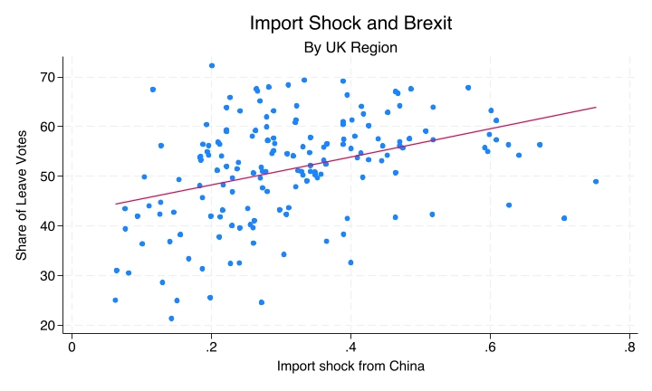

From Variable Types to Plots and Tables
You’ll learn to
- Choose appropriate tables, plots, and summary statistics based on the types of variables being analysed.
The decision rule
- Identify the types of variables you’re working with.
- Choose the appropriate descriptive tool based on those types.
Variable types: A quick reminder
- Nominal: Categories with no inherent order (e.g., party voted for, gender, region).
- Numeric: Variables measured on a scale with meaningful intervals or ratios.
- Includes interval variables.
- Includes ratio variables.
Three cases to memorise
When describing correlations between two variables, you need to know:
- Nominal + Nominal
- Nominal + Numeric
- Numeric + Numeric
Case 1: Nominal + Nominal
Example: Gender and vote choice.
Tools:
- Cross-tabulation (with row or column percentages)
- Bivariate bar chart
Case 1: Nominal + Nominal (example)
| Women | Men | |
|---|---|---|
| Labour | 44% | 43% |
| Cons | 19% | 22% |
| Lib Dem | 12% | 10% |
| Green | 9% | 5% |
| Reform | 9% | 13% |
Case 2: Nominal + Numeric
Example: Favourite newspaper and political preferences.
Tools:
- Compare means by category
- Bar chart of means
Case 2: Nominal + Numeric (example)
| Newspaper | Mean left-right self-placement |
|---|---|
| Guardian/Observer | 3.29 |
| Independent | 4.47 |
| Times | 5.29 |
| Daily Mail | 6.1 |
| Telegraph | 6.4 |
Case 3: Numeric + Numeric
Example: Import shock and Brexit
Tools:
- Scatterplot
- Regression line
Case 3: Numeric + Numeric (example)
- Import shock and share of leave votes: positive correlation.

A common mistake: Wrong tool for variable types
- Problem: Using a scatterplot for nominal + nominal variables.
- Example: Plotting “gender” (coded 1 = male, 2 = female) against “party voted for” (coded 1 = Labour, 2 = Conservative, etc.).
Why this is a problem
The numeric codes are arbitrary; they don’t represent quantities.
A scatterplot implies a continuous relationship, but there’s no meaningful distance between “male” and “female” or between “Labour” and “Conservative.”
- Correct tool: Cross-tabulation or bivariate bar chart (Case 1: Nominal + Nominal).
Another common mistake: Treating numeric as nominal
Problem: Using a cross-tabulation for numeric + numeric variables.
- Example: Creating a frequency table of “age” by “income” with every unique value as a category.
Why it’s bad: You lose the quantitative information: the fact that 25 is closer to 26 than to 65.
- Correct tool: Scatterplot + regression line (Case 3: Numeric + Numeric).
Summary table: Quick reference
| Var 1 | Var 2 | Tools |
|---|---|---|
| Nominal | Nominal | Cross-tabulation, bivariate bar chart |
| Nominal | Numeric | Compare means, bar chart of means |
| Numeric | Numeric | Scatterplot, regression line |
Recap
- Start with variable types, then choose the appropriate descriptive tool.
- Nominal + Nominal → cross-tabulation and bivariate bar chart.
- Nominal + Numeric → compare means by category and bar chart of means.
- Numeric + Numeric → scatterplot and regression line.
Why this matters:
- The wrong tool for the wrong variable types produces meaningless or misleading output.
- Software won’t stop you from making that mistake.